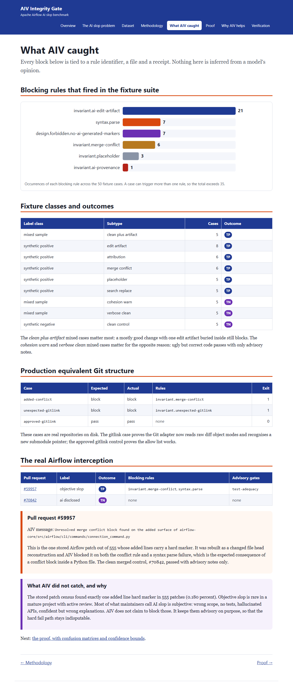

What AIV caught
Every block below is tied to a rule identifier, a file and a receipt. Nothing here is inferred from a model's opinion.
Blocking rules that fired in the fixture suite
Fixture classes and outcomes
| Label class | Subtype | Cases | Outcome |
|---|---|---|---|
| mixed sample | clean plus artifact | 5 | TP |
| synthetic positive | edit artifact | 8 | TP |
| synthetic positive | attribution | 6 | TP |
| synthetic positive | merge conflict | 6 | TP |
| synthetic positive | placeholder | 5 | TP |
| synthetic positive | search replace | 5 | TP |
| mixed sample | cohesion warn | 5 | TN |
| mixed sample | verbose clean | 5 | TN |
| synthetic negative | clean control | 5 | TN |
The clean plus artifact mixed cases matter most: a mostly good change with one edit artifact buried inside still blocks. The cohesion warn and verbose clean mixed cases matter for the opposite reason: ugly but correct code passes with only advisory notes.
Production equivalent Git structure
| Case | Expected | Actual | Rules | Exit |
|---|---|---|---|---|
added-conflict | block | block | invariant.merge-conflict | 1 |
unexpected-gitlink | block | block | invariant.unexpected-gitlink | 1 |
approved-gitlink | pass | pass | none | 0 |
These cases are real repositories on disk. The gitlink case proves the Git adapter now reads raw diff object modes and recognises a new submodule pointer; the approved gitlink control proves the allow list works.
The real Airflow interception
| Pull request | Label | Outcome | Blocking rules | Advisory gates |
|---|---|---|---|---|
| #59957 | objective slop | TP | invariant.merge-conflict, syntax.parse | test-adequacy |
| #70842 | ai disclosed | TN | none | none |
Pull request #59957
AIV message: Unresolved merge conflict block found on the added surface of airflow-core/src/airflow/cli/commands/connection_command.py
This is the one stored Airflow patch out of 555 whose added lines carry a hard marker. It was rebuilt as a changed file head reconstruction and AIV blocked it on both the conflict rule and a syntax parse failure, which is the expected consequence of a conflict block inside a Python file. The clean merged control, #70842, passed with advisory notes only.
What AIV did not catch, and why
The stored patch census found exactly one added line hard marker in 555 patches (0.180 percent). Objective slop is rare in a mature project with active review. Most of what maintainers call AI slop is subjective: wrong scope, no tests, hallucinated APIs, confident but wrong explanations. AIV does not claim to block those. It keeps them advisory on purpose, so that the hard fail path stays indisputable.
Next: the proof, with confusion matrices and confidence bounds.